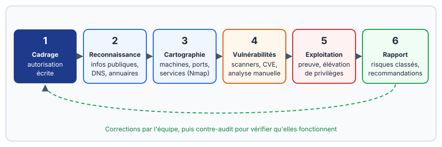

Tests de sécurité¶
Résumé
Un système peut être rapide et fonctionnel, et pourtant ouvert à tous les vents. Les tests de sécurité cherchent les failles avant les attaquants. Cette partie présente le vocabulaire (vulnérabilité, CVE, CVSS), le cadre légal, les familles de tests (audit, scan de vulnérabilités, test d'intrusion), le classement OWASP Top 10, puis les outils de référence : Nmap (avec un exemple), Greenbone/OpenVAS, Nessus, OWASP ZAP, Burp Suite et Lynis.
| Propriété | Valeur |
|---|---|
| Difficulté | Intermédiaire |
| Durée estimée | 20 min de lecture et de questions |
| Version décrite | Nmap 7.94, OWASP Top 10:2025, CVSS 4.0 |
| Place dans le parcours | Partie 4 sur 5 du parcours Les tests en informatique |
| Dernière mise à jour | 2026-11-25 |
1. Pourquoi tester la sécurité ?¶
Les tests fonctionnels vérifient que le système fait ce qu'il doit faire. Les tests de sécurité vérifient qu'il ne fait pas ce qu'il ne doit pas faire : laisser entrer un inconnu, révéler des données, obéir à une commande cachée dans un formulaire. Un défaut fonctionnel se voit ; une faille de sécurité ne se voit pas, jusqu'au jour où quelqu'un l'exploite. Or des robots balaient en permanence tout Internet : un serveur fraîchement exposé reçoit très vite, souvent en quelques minutes, ses premières tentatives de connexion.
On teste la sécurité pour découvrir les failles et les corriger par ordre de gravité, vérifier les correctifs, prouver un niveau de sécurité (clients, assureurs, normes comme ISO 27001 ou la directive européenne NIS 2) et mesurer la réaction de l'équipe face à une attaque simulée.
2. Le vocabulaire de base¶
| Terme | Définition |
|---|---|
| Vulnérabilité (faille) | Une faiblesse qui peut être utilisée pour nuire : version boguée, mauvaise configuration |
| Exploit | Le programme ou la technique qui utilise concrètement une vulnérabilité |
| Risque | La combinaison de la probabilité d'une attaque et de son impact |
| Surface d'attaque | Tout ce qu'un attaquant peut atteindre : ports ouverts, applications, comptes, personnes |
| Durcissement (hardening) | Réduire la surface d'attaque : désactiver le superflu, renforcer les réglages |
Une CVE (Common Vulnerabilities and Exposures) est l'identifiant unique d'une vulnérabilité publique, de la forme CVE-année-numéro. Par exemple, CVE-2021-44228 est la faille Log4Shell, découverte en décembre 2021 dans Log4j, une bibliothèque Java (un morceau de code réutilisable, intégré à des milliers d'applications) : écrire un simple texte piégé dans un journal suffisait à prendre le contrôle d'un serveur. Grâce à cet identifiant, éditeurs, scanners et administrateurs parlent de la même faille. En France, le CERT-FR (ANSSI) publie avis et alertes en citant les CVE.
Le CVSS (Common Vulnerability Scoring System) note la gravité d'une vulnérabilité de 0 à 10 : exploitable à distance ? sans compte ? avec quel impact ? La version actuelle est CVSS 4.0 (2023), mais beaucoup d'outils affichent encore des scores 3.1. Échelle : faible de 0,1 à 3,9, moyenne de 4,0 à 6,9, élevée de 7,0 à 8,9, critique de 9,0 à 10. Log4Shell a reçu 10,0 (en CVSS 3.1). Le score aide à prioriser, mais il ignore le contexte : une faille « moyenne » sur un serveur exposé à Internet peut être plus urgente qu'une faille « élevée » sur une machine isolée.
3. Le cadre légal : une autorisation écrite avant tout¶
Tester sans autorisation est un délit
En France, l'article 323-1 du Code pénal punit l'accès ou le maintien frauduleux dans un système informatique de 3 ans d'emprisonnement et 100 000 € d'amende. La peine monte à 5 ans et 150 000 € si des données sont supprimées ou modifiées ou si le fonctionnement du système est altéré, et à 7 ans et 300 000 € pour un traitement de données personnelles mis en œuvre par l'État. « Je voulais seulement vérifier » n'est pas une défense.
Avant tout scan ou test d'intrusion d'un système qui n'est pas le sien, il faut une autorisation écrite du propriétaire (convention d'audit) qui précise le périmètre (adresses, applications, et ce qui est exclu), les dates, les techniques permises ou interdites, les contacts d'urgence et la confidentialité des résultats. Un hébergeur ou un fournisseur de cloud a aussi ses propres règles. En France, l'ANSSI qualifie PASSI les prestataires d'audit qui respectent son référentiel.
Pour apprendre : son propre lab, des applications volontairement vulnérables (DVWA, OWASP Juice Shop), des plateformes d'entraînement légales (Root Me, TryHackMe), ou scanme.nmap.org, que le projet Nmap met à disposition pour quelques scans par jour.
4. Les familles de tests de sécurité¶
| Test | Principe | Apport |
|---|---|---|
| Audit de configuration | Comparer les réglages d'un système à un référentiel de bonnes pratiques (guides de l'ANSSI, référentiels CIS), avec un outil comme Lynis | Liste des écarts au durcissement attendu |
| Scan de vulnérabilités | Un outil interroge automatiquement les machines pour détecter les versions et failles connues (OpenVAS, Nessus) | Large, rapide, répétable chaque semaine ; mais faux positifs possibles (alerte pour une faille inexistante) et rien sur les failles inconnues |
| Test d'intrusion (pentest) | Un auditeur humain se met dans la peau d'un attaquant et exploite les failles, en les enchaînant, sur une durée limitée | Profondeur et preuve concrète : « depuis le Wi-Fi invité, nous sommes devenus administrateurs du domaine » |
L'analogie : le scan est le contrôle technique de la voiture ; le test d'intrusion est l'expert qui essaie vraiment de la voler. Les deux sont complémentaires : le scan chaque semaine sur tout le parc, le test d'intrusion une ou deux fois par an, ou avant la mise en ligne d'une application importante.
Comme en partie 1, on parle de test en boîte noire (l'auditeur ne sait rien, comme un attaquant extérieur), grise (il a un compte utilisateur, comme un salarié malveillant) ou blanche (il a tout, y compris le code source).
Côté développement, trois analyses automatiques complètent ces tests : le SAST analyse le code source sans l'exécuter (SonarQube, Semgrep) ; le DAST attaque l'application en fonctionnement, de l'extérieur (OWASP ZAP) ; la SCA inventorie les bibliothèques utilisées et signale celles qui ont des CVE (Trivy, OWASP Dependency-Check). Log4Shell a montré qu'une seule bibliothèque vulnérable pouvait toucher des milliers de logiciels.
5. Le déroulement d'un test d'intrusion¶

Les étapes d'un test d'intrusion, du cadrage au contre-audit.
- Cadrage : périmètre, règles et autorisation signée.
- Reconnaissance : informations publiques, sans toucher aux systèmes (sous-domaines, technologies visibles, adresses de messagerie).
- Cartographie : machines actives, ports ouverts, services et versions (Nmap).
- Recherche de vulnérabilités : scanners et analyse manuelle.
- Exploitation : prouver que la faille est réelle, puis tenter l'élévation de privilèges (devenir administrateur) et le mouvement latéral (rebondir vers d'autres machines). L'auditeur s'arrête à la preuve, sans causer de dégâts.
- Rapport : synthèse pour la direction, détail technique de chaque faille avec sa gravité et sa recommandation de correction.
Après les corrections, un contre-audit vérifie leur efficacité.
6. L'OWASP Top 10¶
L'OWASP (Open Worldwide Application Security Project) est une fondation à but non lucratif qui publie des guides et outils libres sur la sécurité des applications. Son Top 10 classe les dix risques les plus critiques des applications web. Version en vigueur, l'OWASP Top 10:2025 :
| Rang | Catégorie | En clair |
|---|---|---|
| A01 | Broken Access Control | Accéder aux données d'un autre utilisateur, par exemple en changeant un numéro dans l'adresse |
| A02 | Security Misconfiguration | Mots de passe par défaut, services inutiles activés, messages d'erreur trop bavards |
| A03 | Software Supply Chain Failures | Bibliothèques vulnérables ou piégées, outils de construction compromis |
| A04 | Cryptographic Failures | Données sensibles en clair, chiffrement obsolète |
| A05 | Injection | Une saisie interprétée comme une commande (injection SQL, de commandes système) |
| A06 | Insecure Design | La faille est dans la logique même de l'application |
| A07 | Authentication Failures | Mots de passe faibles acceptés, essais illimités, sessions mal gérées |
| A08 | Software or Data Integrity Failures | Mises à jour non signées, données modifiables en chemin |
| A09 | Security Logging and Alerting Failures | L'attaque a lieu, personne ne la voit faute de journaux et d'alertes |
| A10 | Mishandling of Exceptional Conditions | Erreurs mal traitées, système qui reste « ouvert » quand quelque chose échoue |
Plusieurs catégories relèvent directement de l'administrateur : A02 (configuration des serveurs et du cloud), A03 (mises à jour des composants), A04 (certificats et protocoles TLS), A07 (politique de mots de passe, authentification multifacteur) et A09 (journaux centralisés, supervision).
7. Les outils¶
| Outil | Rôle | Licence |
|---|---|---|
| Nmap | Cartographie : machines, ports ouverts, versions des services | Libre |
| Greenbone / OpenVAS | Scanner de vulnérabilités réseau | Libre (édition communautaire) |
| Nessus (Tenable) | Scanner de vulnérabilités réseau, le plus répandu en entreprise | Commercial ; version gratuite limitée à quelques adresses |
| OWASP ZAP | Scanner d'applications web (DAST) | Libre |
| Burp Suite (PortSwigger) | Proxy d'audit web, l'outil quotidien des auditeurs | Community gratuite, Professional payante |
| Lynis (CISOfy) | Audit de durcissement d'un serveur Linux | Libre |
7.1 Nmap : cartographier¶
Nmap (Network Mapper), créé en 1997, découvre les machines actives, leurs ports ouverts (les « portes » numérotées par lesquelles un service écoute : 22 pour SSH, 443 pour HTTPS) et les services qui y répondent.
🐧 Exemple : scan d'un serveur web de test (-sV : détecter la version des services) :
Nmap scan report for 172.17.0.2
Host is up (0.00026s latency).
Not shown: 998 closed tcp ports (conn-refused)
PORT STATE SERVICE VERSION
53/tcp filtered domain
80/tcp open http nginx 1.31.10
Par défaut, Nmap teste les 1 000 ports TCP les plus courants. 998 sont fermés (closed : la machine répond que personne n'écoute). Le port 80 est ouvert (open) : un serveur web nginx 1.31.10 y répond, version que l'on comparera aux CVE connues. Le port 53 est filtré (filtered) : aucune réponse, un pare-feu bloque probablement le passage.
Options courantes : -sn (découvrir les machines d'un réseau sans scanner les ports), -p 22,80,443 ou -p- (ces ports, ou les 65 535), -O (deviner le système d'exploitation), -A (versions, système, scripts et traceroute), --script vuln (scripts de détection de vulnérabilités).
Le test négatif de l'administrateur
Lancé depuis l'extérieur, Nmap vérifie un pare-feu : il doit trouver ouverts uniquement les ports prévus. Tout autre port ouvert est une surface d'attaque à justifier ou à fermer.
7.2 OpenVAS et Nessus : scanner les vulnérabilités¶
Un scanner de vulnérabilités va plus loin : pour chaque service trouvé, il lance des milliers de tests mis à jour chaque jour, et produit un rapport avec, pour chaque faille, la machine, le port, la CVE, le score CVSS et la solution (souvent : « mettre à jour en version X »). Greenbone Community Edition regroupe le scanner libre OpenVAS et une interface web ; Nessus est son équivalent commercial.
Un scan authentifié (avec un compte SSH ou Windows dédié) lit directement la liste des logiciels et correctifs installés : il trouve beaucoup plus de failles réelles et produit moins de faux positifs qu'un scan non authentifié, qui voit la machine de l'extérieur.
7.3 ZAP et Burp Suite : tester les applications web¶
Ces deux outils se placent comme proxy entre le navigateur et le site : chaque requête passe par eux et peut être lue, modifiée, rejouée. ZAP (aujourd'hui « ZAP by Checkmarx »), libre, explore le site puis lance des attaques connues ; il s'intègre facilement dans un pipeline. Burp Suite est l'outil de référence des auditeurs pour les tests manuels ; son scanner automatique est réservé à l'édition payante.
7.4 Lynis : auditer le durcissement d'un serveur¶
Lynis s'exécute sur le serveur Linux à auditer avec sudo lynis audit system. Il passe en revue des centaines de points (mises à jour, comptes, droits, SSH, pare-feu, journaux) et donne des avertissements, des suggestions et un indice de durcissement sur 100, utile pour suivre les progrès.
8. Questions de révision¶
- Que signifie
CVE-2021-44228, et que nous apprend sa note CVSS de 10,0 ? - Un collègue propose de « lancer un petit Nmap » sur le site d'un concurrent. Que lui répondre ?
- Scan de vulnérabilités ou test d'intrusion : quelle différence, et lequel planifier chaque semaine ?
- Dans la sortie Nmap de la section 7.1, que signifient
open,closedetfiltered? - Pourquoi un scan authentifié donne-t-il de meilleurs résultats ?
Corrigé
- C'est l'identifiant de la faille Log4Shell (Log4j, 2021). La note de 10,0 (CVSS 3.1) est la gravité maximale : exploitable à distance, sans compte, avec prise de contrôle complète.
- Que c'est illégal sans autorisation écrite du propriétaire (article 323-1 du Code pénal). Pour s'entraîner : son propre lab ou
scanme.nmap.org. - Le scan est automatique, large, et ne trouve que des failles connues ; le test d'intrusion est mené par un humain, en profondeur, et exploite les failles pour prouver un impact. On planifie le scan chaque semaine.
open: un service accepte les connexions ;closed: la machine répond mais rien n'écoute ;filtered: pas de réponse, un pare-feu bloque probablement.- Il lit directement la liste des logiciels et correctifs installés au lieu de deviner les versions de l'extérieur : plus de failles réelles, moins de faux positifs.
Ressources¶
- OWASP Top 10:2025 (en anglais) — le classement officiel et le détail de chaque catégorie.
- Guide de référence de Nmap (en français) — toutes les options de Nmap.
- CERT-FR — avis et alertes de sécurité de l'ANSSI.
- Prestataires qualifiés PASSI (ANSSI) — le référentiel et la liste des auditeurs qualifiés.
- Greenbone Community Edition (en anglais) — installation du scanner OpenVAS.
- Documentation de ZAP (en anglais) — scans automatisés d'applications web.
- Code pénal, atteintes aux systèmes de traitement automatisé de données (Légifrance) — les articles 323-1 à 323-8.
Partie précédente : Tests de performance et de charge · Partie suivante : Tests d'intégration et CI/CD